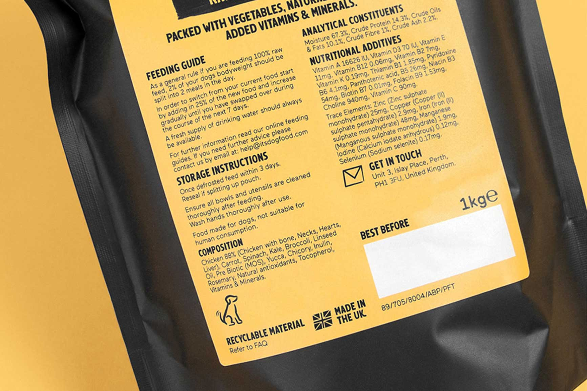
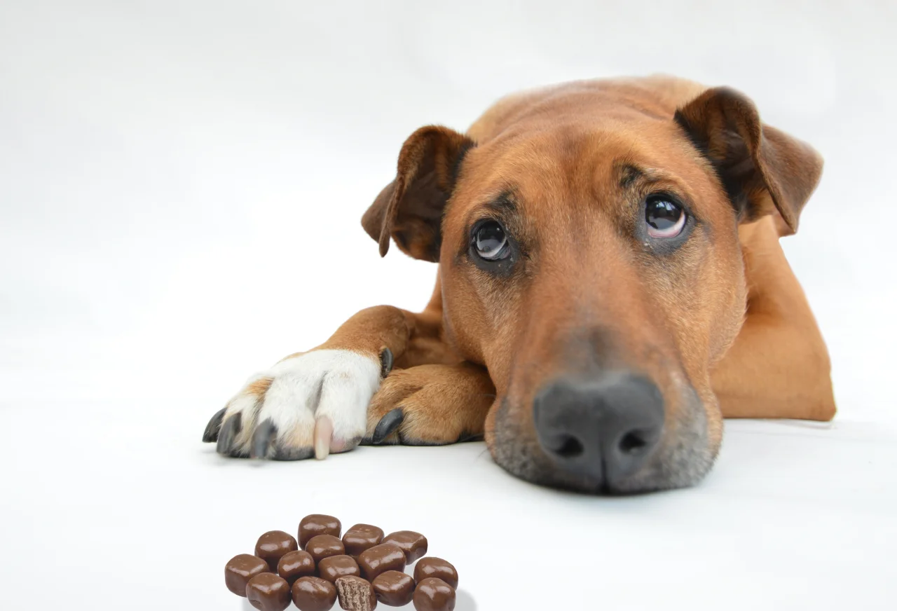
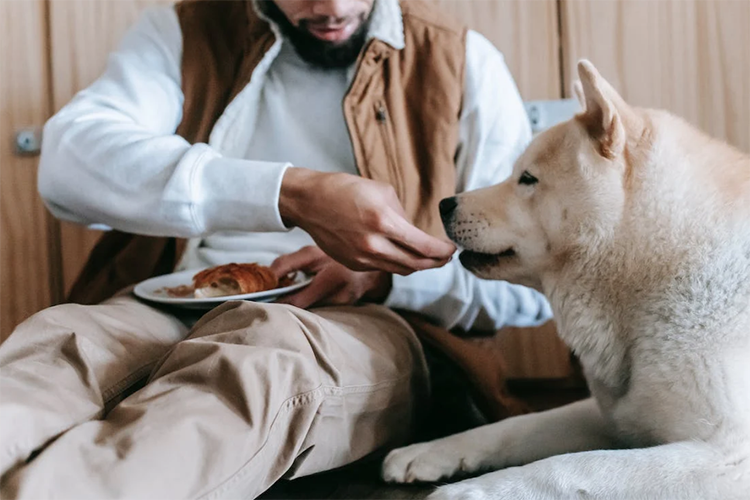
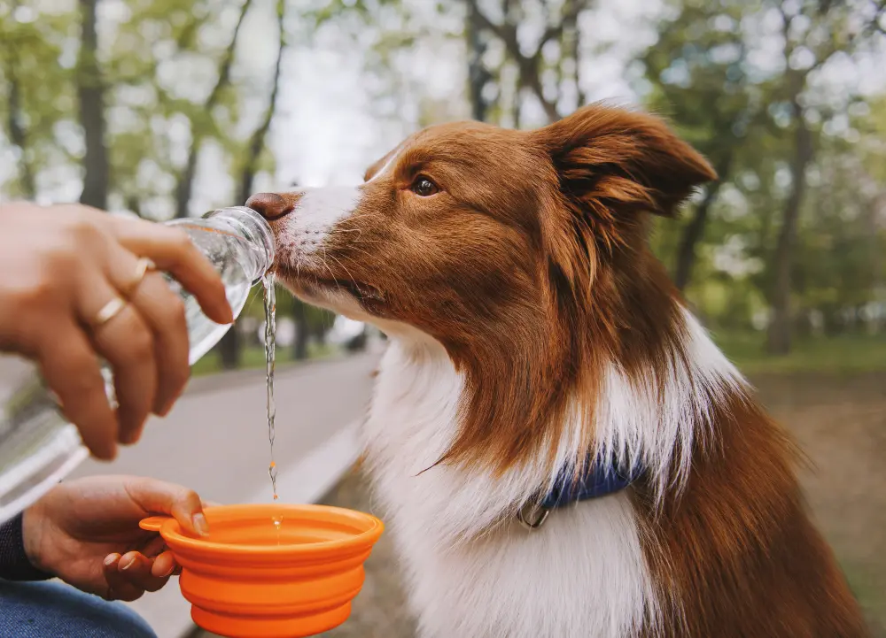
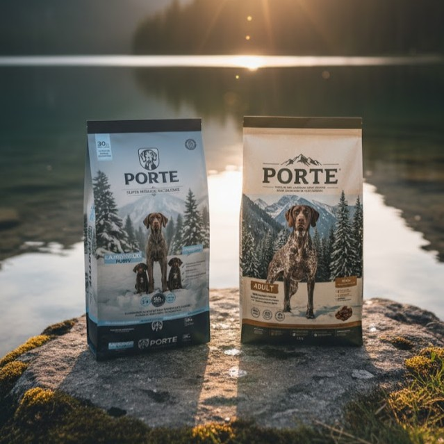
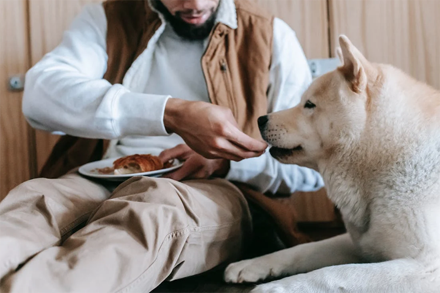
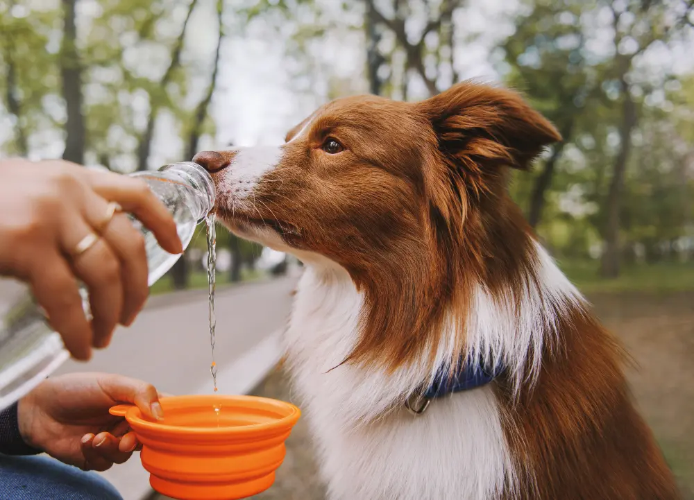
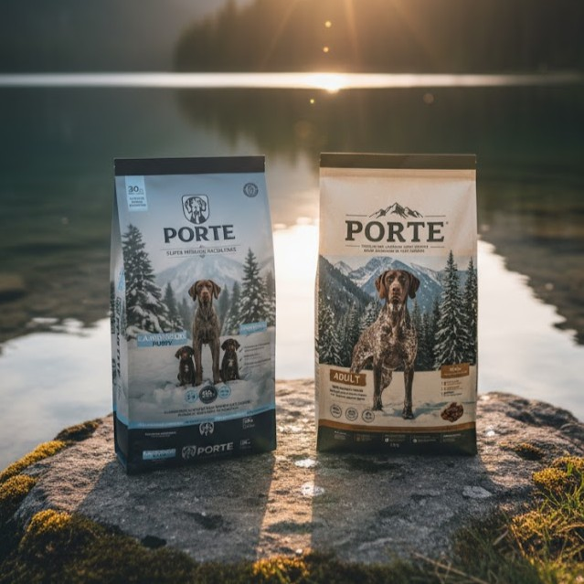

Tips de alimentación


 





Cómo leer las etiquetas
Aprende a decodificar la lista de ingredientes y el análisis garantizado para elegir con confianza.
El peligro del chocolate
Descubre por qué este manjar humano es tóxico para perros y gatos y cómo actuar en una emergencia.
Elige un buen alimento balanceado
Guía para encontrar la nutrición de calidad que tu mascota merece, diferenciando Súper Premium.
Cuidado con los restos de comida
No toda nuestra comida es segura. Conoce qué alimentos están prohibidos y cuáles son problemáticos.
La importancia de la hidratación
El agua es el nutriente más esencial. Claves para asegurar que tu perro y gato beban lo suficiente.
Transición de alimento (Guía)
Cómo cambiar de balanceado correctamente en 7-10 días para evitar problemas digestivos.